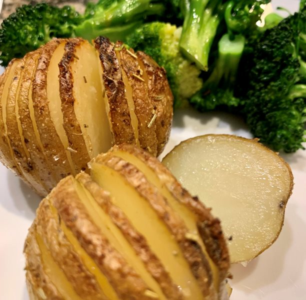

Menu
Hasselback Potatoes Recipe

Hasselback potatoes are thinly sliced potatoes that are roasted to golden brown perfection, then topped with cheese, bacon, sour cream & green onions.
With just a little more effort than a plain baked potato, you can make these showy Hasselback potatoes. They are easy to make and encompass two favorite potato textures – edges that are crispy like your favorite French fries with a creamy center reminiscent of mashed.
The below basic Hasselback potatoes recipe will make you look like a cooking whiz and using Idaho Potatoes that will prove that you clearly have a discerning taste!
Ingredients
- 4 large Potatoes
- Lemon juice
- 4 tablespoons butter or oil
- Fresh rosemary
- 1 large clove garlic, sliced
- Salt
- Pepper
- Fresh parsley, chopped, for garnish
Cooking Steps
- Preheat oven to 400 degrees F.
- Prepare a bowl of cold water with a squeeze of lemon juice in it. Slice off the bottom of each Idaho® Russet Potato lengthwise to make them steadier for cutting.
- Place potato between two chopsticks. Cut slits 1/4 apart using the chopsticks as a guide to keep from cutting all the way through. The slices should stay connected at the bottom.
- Carefully fan out the sliced pieces without breaking them apart. Place the cut potato in the prepared bowl of water while you cut the remaining potatoes.
- Melt butter in a saucepan over medium heat. Add a couple of sprigs of rosemary, the sliced garlic, and a sprinkle of salt and pepper. Let it sit a few minutes to season the butter.
- Remove potatoes from water and dry thoroughly and place them on a baking sheet.
- Brush the potatoes with some of the melted butter and bake for 1 hour.
- Halfway through cooking, the potatoes will start to fan out. When this happens, brush with some more of the melted butter.
- Remove from the oven. Brush with remaining butter, sprinkle with salt, and garnish with chopped parsley.
- Serve right away while still hot from the oven.

Ideal serving for 4 people